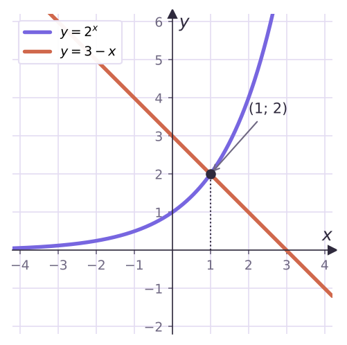

Теория
В уравнениях 2x = 16, 3x + 1 − 3x = 54, 4x − 5·2x + 4 = 0 неизвестное стоит в показателе степени. Такие уравнения называют показательными.
Уравнение, в котором неизвестное содержится в показателе степени, называется показательным.
Главное свойство
Если a > 0 и a ≠ 1, то ax₁ = ax₂ тогда и только тогда, когда x1 = x2.
Почему. Из урока 11: показательная функция при a > 1 возрастает, при 0 < a < 1 убывает. Монотонная функция каждое своё значение принимает ровно один раз. Поэтому если степени с одним основанием равны, то равны и показатели. А при a = 1 свойство ломается: 1² = 1⁵, хотя 2 ≠ 5.
Отсюда главная идея почти всех показательных уравнений: записать обе части как степени с одним и тем же основанием и приравнять показатели. Такой переход равносилен — посторонних корней не появляется, проверка не обязательна (если нет ошибок в вычислениях).
Способ 1. Привести к одному основанию
Реши уравнение 9·3x = 1/3.
Слева 9·3x = 3²·3x = 3x + 2, справа 1/3 = 3−1. Получаем 3x + 2 = 3−1, откуда x + 2 = −1.
Ответ: x = −3.
Реши уравнение 25x = (1/5)x − 3.
25 = 5², 1/5 = 5−1. Тогда 52x = 5−(x − 3), 2x = −x + 3, 3x = 3.
Ответ: x = 1.
Скобки в показателе: (1/5)x − 3 = 5−(x − 3) = 5−x + 3, а не 5−x − 3. Минус умножается на весь показатель.
Реши уравнение 2x² − 3x = 1/4.
1/4 = 2−2, значит, x² − 3x = −2, x² − 3x + 2 = 0, x = 1 или x = 2.
Переход равносильный — оба корня подходят. Ответ: x = 1, x = 2.
Способ 2. Вынести общий множитель за скобки
Если в уравнении стоит сумма или разность степеней с одним основанием, но с разными показателями (x + 2, x, x − 1…), выносят за скобки степень с наименьшим показателем. В скобках остаются обычные числа.
Реши уравнение 2x + 2 − 2x = 24.
2x + 2 = 2x·2² = 4·2x. Выносим 2x: 2x(4 − 1) = 24, 2x = 8 = 2³.
Ответ: x = 3.
Реши уравнение 3x + 1 + 3x − 1 = 30.
Наименьший показатель x − 1. Выносим 3x − 1: 3x − 1(3² + 1) = 30, 3x − 1·10 = 30, 3x − 1 = 3.
x − 1 = 1. Ответ: x = 2.
Ошибка: «2x + 2 − 2x = 2²». Вычитать показатели можно при делении степеней (2x + 2 : 2x = 2²), а не при вычитании. Сумма и разность степеней так не упрощаются — для них и нужно вынесение за скобки.
Способ 3. Разные основания, одинаковые показатели
Пригодится свойство ax·bx = (ab)x и деление на степень. Делить обе части на ax можно всегда: ax > 0 и никогда не равно нулю, поэтому корни не теряются.
Реши уравнения: а) 2x·5x = 1000; б) 5x = 3x.
а) 2x·5x = 10x = 10³. Ответ: x = 3.
б) Делим на 3x > 0: (5/3)x = 1 = (5/3)0. Ответ: x = 0.
Способ 4. Замена переменной
Если в уравнении есть a2x и ax, то a2x = (ax)², и замена t = ax даёт квадратное уравнение. Например, 4x = (2²)x = (2x)², 9x = (3x)². Главное условие: t > 0, ведь ax всегда положительно.
Реши уравнение 4x − 3·2x − 4 = 0.
Пусть t = 2x > 0. Тогда 4x = t², и t² − 3t − 4 = 0, t = 4 или t = −1.
t = −1 не подходит: 2x не бывает отрицательным. 2x = 4, x = 2.
Ответ: x = 2.
Реши уравнение 9x − 10·3x + 9 = 0.
t = 3x > 0: t² − 10t + 9 = 0, t = 1 или t = 9. Оба положительны: 3x = 1 ⇒ x = 0; 3x = 9 ⇒ x = 2.
Ответ: x = 0, x = 2.
Две частые ошибки при замене: записать 4x = 2·2x (на самом деле 4x = (2x)²) и забыть, что t > 0, оставив «корень» из уравнения 2x = −1. И не останавливайся на t: ответ — значения x, а не t.
Графически: когда корень угадывается

Реши уравнение 2x = 3 − x.
Подбором: x = 1 — корень, 2¹ = 2 = 3 − 1.
Других корней нет: левая часть возрастает, правая убывает. При x > 1 слева больше 2, справа меньше 2; при x < 1 — наоборот. Графики «расходятся» по обе стороны от точки (1; 2).
Ответ: x = 1.
Задачи урока
Реши в тетради. Ответы разберём на занятии.
Тест к уроку
Домашнее задание
Задачи Д1–Д6 ниже. Около каждого уравнения подписать способ: одно основание, за скобки, деление на степень, замена или монотонность. При замене не забывать условие t > 0.